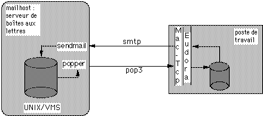

Courrier électronique POP

POP (Post Office Protocol)
- récupération à distance de la boîte aux lettres
- ne pas confondre avec "Point of Presence"
- pop account (compte distant)
- smtp client côté micro-ordinateur
- versions de protocoles : POP2, POP3
- clients : mh, xmh, NeXTMail, Eudora (Mac), Popmail (PC)
- serveurs : popper (Berkeley), pop3d
- autre protocole : IMAP (Internet Mail Access Protocol)

Retour au plan
Juin 1995, page maintenue par
Groupe Multimedia